Jueves 12 de noviembre · 19:00 hs
Noche del 12
Degustación con [BODEGA INVITADA], platitos de la cocina y música en vivo.
Cupo 30[PRECIO]
Donado 1802 · DoHo · Desde 2014
Cocina de autor con alma de bodegón en la casona de la esquina. Vermú en la vereda, vinos de bodegas amigas y una pizarra que cambia todos los días.
Pizarra de hoy · Menú ejecutivo Lomo saltado con arroz · $30.000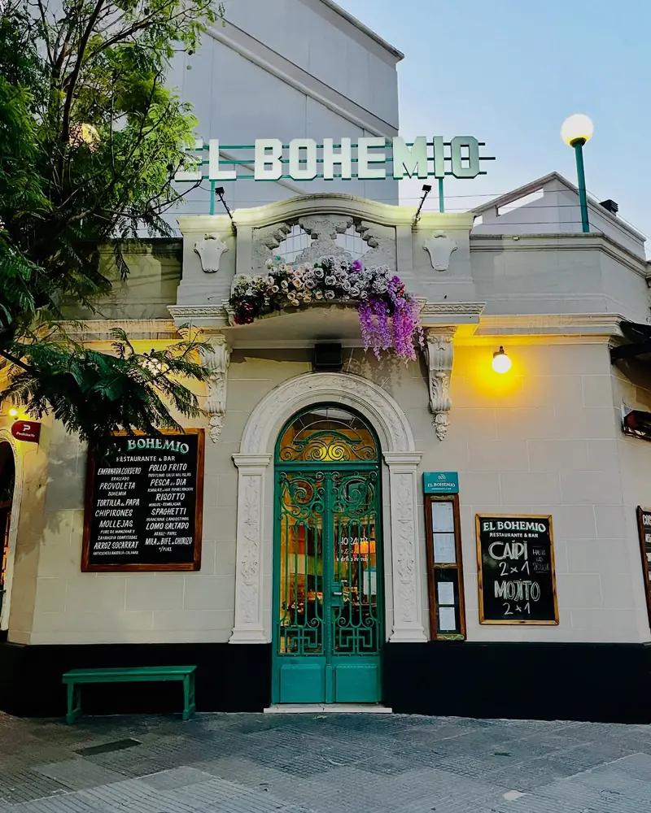
Donado 1802 · Villa Urquiza
Lo que sale hoy de la cocina
Cambia todos los días, como la de la vereda. Tocá un plato para verlo.Pasá el mouse por un plato para verlo.
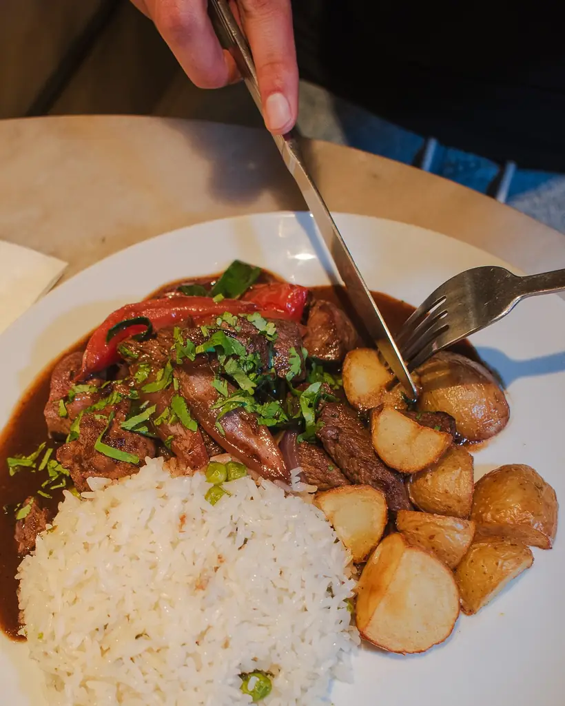
Mediodías de lunes a viernes, menos los martes · 12:00 a 16:00 hs
Comer · Beber
Cocina latinoamericana de autor, pescados del día y clásicos de bodegón. Una sección por vez para no marearte.
Mediodía en la vereda
Una casona reciclada en la esquina de Donado y La Pampa, a pasos del Parque Donado Holmberg. De día, sol en la vereda y menú ejecutivo; de noche, guirnaldas prendidas, vermú y copas.
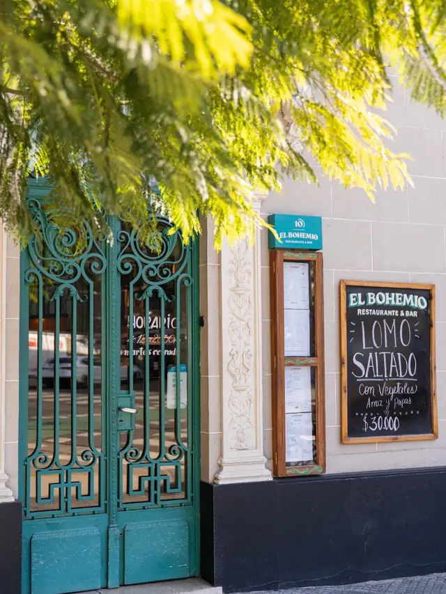
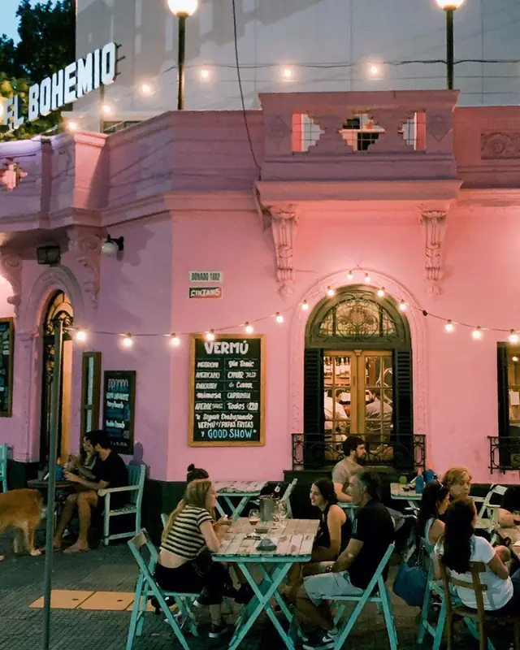
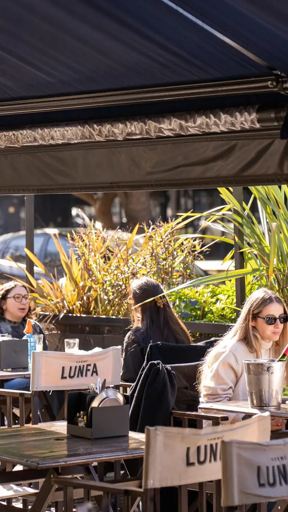
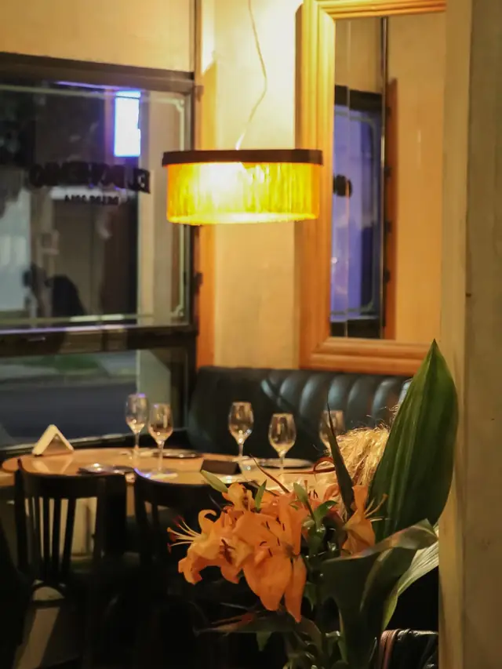
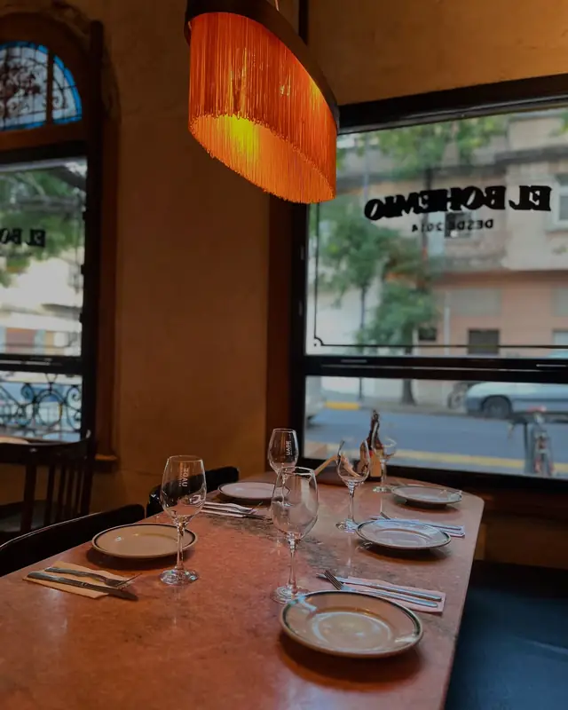
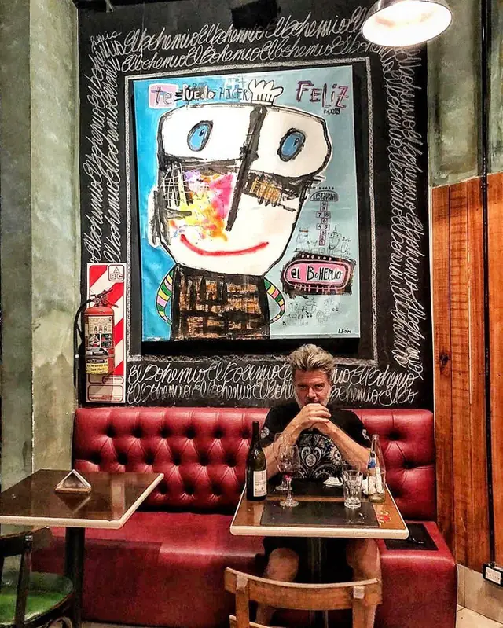
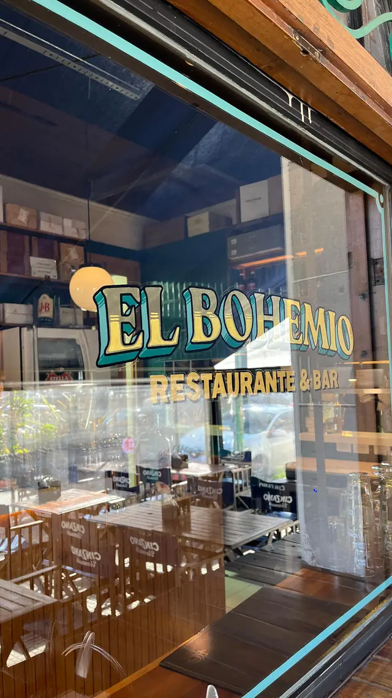
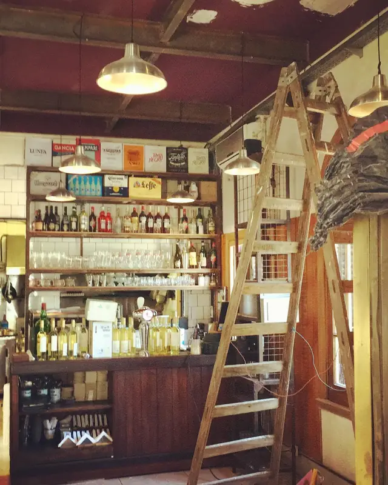
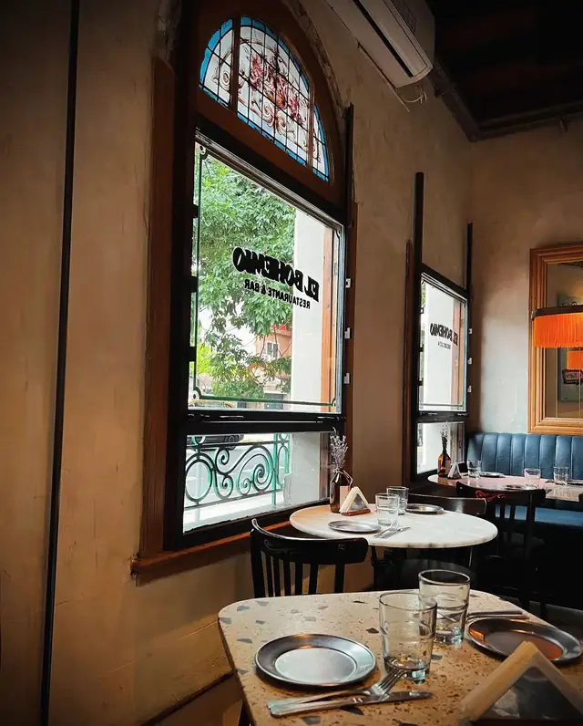
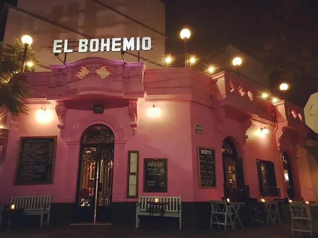
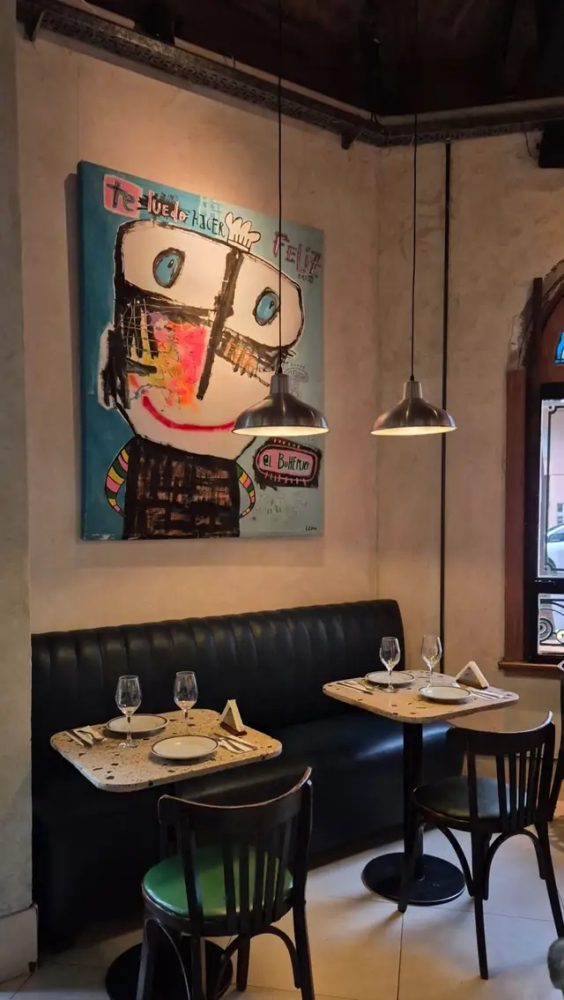
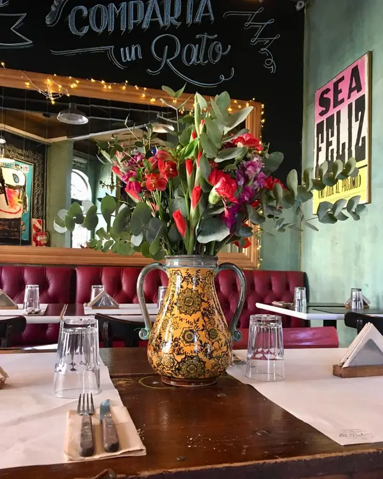
Copas, bodegas y noches especiales
Degustaciones con bodegas amigas, la Semana del Vermú, el Martini Week y una noche especial el 12 de cada mes. Deslizá el talón para sacar tu entrada.Arrastrá el talón o hacé clic para sacar tu entrada.
Degustación con [BODEGA INVITADA], platitos de la cocina y música en vivo.
Cupo 30[PRECIO]
5 vinos especialmente seleccionados, platitos para acompañar y descuentos para seguir la noche.
Cupo limitadoPróxima: [FECHA]
Con Vermú Lunfa: clásico y rosado spritz, promos en la vereda y una semana entera de vermucitos.
21 de marzo · Día del Vermú
Un Martini especial pensado para maridar con nuestras croquetas de choclo ahumado.
Pocos días al año
Para llevar
Fiambres, quesos y platos de la casa para disfrutar en tu mesa. Armá tu canasta y pasala a buscar por Donado 1802.
Los precios te los confirmamos por WhatsApp antes de prepararlo.
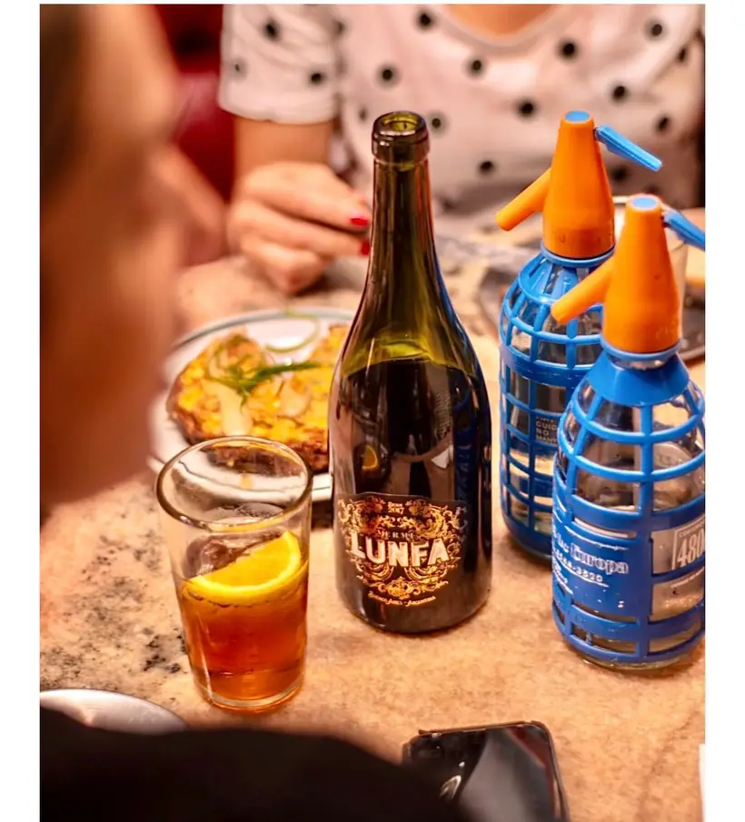
Vermú ahora se dice Lunfa
Vermú Lunfa con soda de sifón, jarritas para compartir y la vereda llena. Las promos cambian con la temporada: miralas en la pizarra de la puerta.
Y para la noche, etiquetas de bodegas amigas que pasan a contarnos sus vinos: Altos del Palmar, Biplano, Caro, Viña Alta, Familia Cassone.
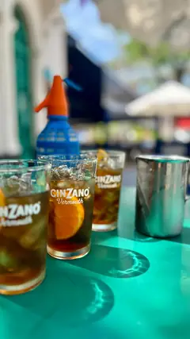
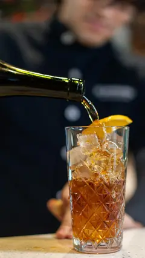
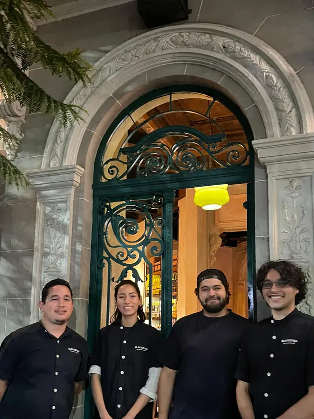
Desde 2014
Una casona reciclada en el corredor gastronómico de DoHo, con cocina abierta, salón art déco y una vereda que se llena. Nos destacamos por la atención: profesional, con una sonrisa y desde el corazón.
Reservas, horarios y cómo llegar
Elegí día, horario y cuántos son: te confirmamos por WhatsApp.